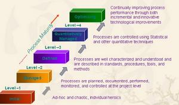

信息时代，软件质量的重要性越来越为人们所认识。软件是产品、是装备、是工具，其质量使得顾客满意，是产品市场开拓、事业得以发展的关键。而软件工程领域在1992年至1997年取得了前所未有的进展,其成果超过软件工程领域过去15年来的成就总和。
软件管理工程引起广泛注意源于20世纪70年代中期。当时美国国防部曾立题专门研究软件项目做不好的原因，发现70%的项目是因为管理不善而引起，而并不是因为技术实力不够，进而得出一个结论，即管理是影响软件研发项目全局的因素，而技术只影响局部。到了20世纪90年代中期，软件管理工程不善的问题仍然存在，大约只有10%的项目能够在预定的费用和进度下交付。软件项目失败的主要原因有：需求定义不明确；缺乏一个好的软件开发过程；没有一个统一领导的产品研发小组；子合同管理不严格；没有经常注意改善软件过程；对软件构架很不重视；软件界面定义不善且缺乏合适的控制；软件升级暴露了硬件的缺点；关心创新而不关心费用和风险；军用标准太少且不够完善等等。在关系到软件项目成功与否的众多因素中，软件度量、工作量估计、项目规划、进展控制、需求变化和风险管理等都是与工程管理直接相关的因素。由此可见，软件管理工程的意义至关重要。
软件管理工程和其它工程管理相比有其特殊性。首先，软件是知识产品，进度和质量都难以度量，生产效率也难以保证。其次，软件系统复杂程度也是超乎想象的。因为软件复杂和难以度量，软件管理工程的发展还很不成熟。
软件管理工程的发展，在经历了从70年代开始以结构化分析与设计、结构化评审、结构化程序设计以及结构化测试为特征的结构化生产时代，到90年代中期，以CMM模型的成熟模型和日益为市场接受为标志，已经进入以过程成熟模型CMM、个体软件过程PSP和群组软件过程TSP为标志的以过程为中心的时代，而软件发展第三个时代，及软件工业化生产时代，从90年代中期软件过程技术的成熟和面向对象技术、构件技术的发展为基础，已经渐露端倪，估计到2005年，可以实现真正的软件工业化生产，这个趋势应该引起软件企业界和有关部门的高度重视，及早采取措施，跟上世界软件发展的脚步。软件生产转向以改善软件过程为中心，是世界各国软件产业或迟或早都要走的道路。
软件过程改善是当前软件管理工程的核心问题。50多年来计算事业的发展使人们认识到要高效率、高质量和低成本地开发软件，必须改善软件生产过程。软件管理工程走过了一条从70年代开始以结构化分析与设计、结构化评审、结构化程序设计以及结构化测试到90年代中期以过程成熟模型CMM、个体软件过程PSP和群组软件过程TSP为标志的以过程为中心向着软件过程技术的成熟和面向对象技术、构件技术的发展为基础的真正软件工业化生产的道路。软件生产转向以改善软件过程为中心，是世界各国软件产业或迟或早都要走的道路。软件工业已经或正在经历着"软件过程的成熟化"，并向"软件的工业化"渐进过渡。规范的软件过程是软件工业化的必要条件。
软件过程研究的是如何将人员、技术和工具等组织起来，通过有效的管理手段，提高软件生产的效率，保证软件产品的质量。由此诞生了软件过程的三个流派：CMU-SEI的CMM/PSP/TSP；ISO 9000质量标准体系；ISO/IEC 15504（SPICE）。
CMM/PSP/TSP即软件能力成熟度模型/ 个体软件过程/群组软件过程，是1987年美国 Carnegie Mellon 大学软件工程研究所(CMU/SEI)以W.S.Humphrey为首的研究组发表的研究成果"承制方软件工程能力的评估方法"；SO 9000质量标准体系是在70年代由欧洲首先采用的，其后在美国和世界其他地区也迅速地发展起来。目前，欧洲联合会积极促进软件质量的制度化，提出了如下ISO9000软件标准系列：ISO9001、ISO9000-3、ISO9004-2、ISO9004-4、ISO9002；ISO/IEC 15504（SPICE）是1991年国际标准化组织采纳了一项动议，开展调查研究，按照CMU-SEI的基本思路，产生的技术报告ISO/IEC 15504--信息技术软件过程评估
目前，学术界和工业界公认美国 Carnegie Mellon 大学软件工程研究所(CMU/SEI) 以W.S.Humphrey为首主持研究与开发的软件能力成熟度模型CMM是当前最好的软件过程，已成为业界事实上的软件过程的工业标准。
1987年美国 Carnegie Mellon 大学软件工程研究所(CMU/SEI)以W.S.Humphrey为首的研究组发表了CMM/PSP/TSP 技术，为软件管理工程开辟了一条新的途经。
CMM框架用5个不断进化的层次来评定软件生产的历史与现状：其中初始层是混沌的过程，可重复层是经过训练的软件过程，定义层是标准一致的软件过程，管理层是可预测的软件过程，优化层是能持续改善的软件过程。任何单位所实施的软件过程，都可能在某一方面比较成熟，在另一方面不够成熟，但总体上必然属于这5个层次中的某一个层次。而在某个层次内部，也有成熟程度的区别。在CMM框架的不同层次中，需要解决带有不同层次特征的软件过程问题。因此，一个软件开发单位首先需要了解自己正处于哪一个层次，然后才能够对症下药地针对该层次的特殊要求解决相关问题，这样才能收到事半功倍的软件过程改善效果。任何软件开发单位在致力于软件过程改善时，只能由所处的层次向紧邻的上一层次进化。而且在由某一成熟层次向上一更成熟层次进化时，在原有层次中的那些已经具备的能力还必须得到保持与发扬。
软件产品质量在很大程度上取决于构筑软件时所使用的软件开发和维护过程的质量。软件过程是人员密集和设计密集的作业过程：若缺乏有素训练，就难以建立起支持实现成功是软件过程的基础，改进工作亦将难以取得成效。CMM描述的这个框架正是勾列出从无定规的混沌过程向训练有素的成熟过程演进的途径。
CMM包括两部分"软件能力成熟度模型"和"能力成熟度模型的关键惯例"。"软件能力成熟度模型"主要是描述此模型的结构，并且给出该模型的基本构件的定义。"能力成熟度模型的关键惯例"详细描述了每个"关键过程方面"涉及的"关键惯例"。这里"关键过程方面"是指一组相关联的活动；每个软件能力成熟度等级包含若干个对该成熟度等级至关重要的过程方面，它们的实施对达到该成熟度等级的目标起到保证作用。这些过程域就称为该成熟度等级的关键过程域，反之有非关键过程域是指对达到相应软件成熟度等级的目标不起关键作用。归纳为：互相关联的若干软件实践活动和有关基础设施的一个?实现和制度化的作用最大的基础设施和活动,对关键过程的实践起关键作用的方针、规程、措施、活动以及相关基础设施的建立。关键实践一般只描述"做什么"而不强制规定"如何做"。各个关键惯例按每个关键过程方面的5个"公共特性"（对执行该过程的承诺，执行该过程的能力，该过程中要执行的活动，对该过程执行情况的度量和分析，及证实所执行的活动符合该过程）归类，逐一详细描述。当作到了某个关键过程的的全部关键惯例就认为实现了该关键过程，实现了某成熟度级及其以低级所含的全部关键过程就认为达到到了了该级。
上面提到了CMM把软件开发组织的能力成熟度分为5个的等级。除了第1级外，其他每一级由几个关键过程方面组成。每一个关键过程方面都由上述5种公共特性予以表征。CMM给每个关键过程了一些具体目标。按每个公共特性归类的关键惯例是按该关键过程的具体目标选择和确定的。如果恰当地处理了某个关键过程涉及的全部关键惯例，这个关键过程的各项目标就达到了，也就表明该关键过程实现了。这种成熟度分级的优点在于，这些级别明确而清楚地反映了过程改进活动的轻重缓急和先后顺序。
| 能力等级 | 特点 | 关键过程 |
| 第一级 基本级 | 软件过程是混乱无序的,对过程几乎没有定义,成功依靠的是个人的才能和经验,管理方式属于反应式 | |
| 第二级 重复级 | 建立了基本的项目管理来跟踪进度.费用和功能特征,制定了必要的项目管理,能够利用以前类似的项目应用取得成功 | 需求管理,项目计划,项目跟踪和监控,软件子合同管理,软件配置管理,软件质量保障 |
| 第三级 确定级 | 已经将软件管理和过程文档化,标准化,同时综合成该组织的标准软件过程,所有的软件开发都使用该标准软件过程 | 组织过程定义,组织过程焦点,培训大纲,软机集成管理,软件产品工程,组织协调,专家审评 |
| 第四级 管理级 | 收集软件过程和产品质量的详细度量,对软件过程和产品质量有定量的理解和控制 | 定量的软件过程管理和产品质量管理 |
| 第五级 优化级 | 软件过程的量化反馈和新的思想和技术促进过程的不断改进 | 缺陷预防,过程变更管理和技术变更管理 |
对于CMM的作用归纳两个主要方面: 科学地评价软件开发单位的软件能力成熟等级;
帮助软件开发单位进行自检，了解自己的强项和弱项，从而不断完善和改进单位的软件开发过程，确保软件质量，提高软件开发能效率。
由于CMM并未提供有关实现CMM关键过程域所需的具体知识和技能，因此，美国 Carnegie Mellon 大学软件工程研究所(CMU/SEI) 以W.S.Humphrey为首主持研究与开发了个体软件过程PSP（Personal software process）和群组软件过程TSP(Team Software Process)，形成CMM/PSP/TSP体系。
PSP 个体软件过程（Personal Software Process）是由美国Carnegie Mellon大学软件工程研究所(CMU/SEI)的Watts s. Humphrey领导开发的，于1995年它的推出，在软件工程界引起了极大的轰动，可以说是由定向软件工程走向定量软件工程的一个标志。PSP是一种可用于控制、管理和改进个人工作方式的自我改善过程，是一个包括软件开发表格、指南和规程的结构化框架。 PSP为基于个体和小型群组软件过程的优化提供了具体而有效的途径，例如如何制订计划，如何控制质量，如何与其他人相互协作等等。在软件设计阶段， PSP的着眼点在于软件缺陷的预防，其具体办法是强化设计结束准则，而不是设计方法的选择。PSP保障软件产品质量的一个重要途径是提高设计质量。
PSP能够说明个体软件过程的原则；帮助软件工程师作出准确的计划；确定软件工程师为改善产品质量要采取的步骤；建立度量个体软件过程改善的基准；确定过程的改变对软件工程师能力的影响。
TSP 群组软件过程TSP(Team Software Process)指导项目组中的成员如何有效地规划和管理所面临的项目开发任务，并且告诉管理人员如何指导软件开发队伍。始终以最佳状态来完成工作。TSP实施集体管理与自己管理自己相结合的原则，最终目的在于指导开发人员如何在最少的时间内，以预定的费用生产出高质量的软件产品，所采用的方法是对群组开发过程的定义、度量和改进。
TSP致力于开发高质量的产品，建立、管理和授权项目小组，并且指导他们如何在满足计划费用的前提下，在承诺的期限范围内，不断生产并交付高质量的产品。
CMM是过程改善的第一步，它提供了评价组织的能力、识别优先改善需求和追踪改善进展的管理方式。企业只有开始CMM改善后，才能接受需要规划的事实，认识到质量的重要性，才能注重对员工经常进行培训,合理分配项目人员,并且建立起有效的项目小组。然而，它实现的成功与否与组织内部有关人员的积极参加和创造性活动密不可分。
PSP能够指导软件工程师如何保证自己的工作质量，估计和规划自身的工作，度量和追踪个人的表现，管理自身的软件过程和产品质量。经过PSP学习和实践的正规训练，软件工程师们能够在他们参与的项目工作之中充分运用PSP，从而有助于CMM目标的实现。
TSP结合了CMM的管理方法和PSP的工程技能，通过告诉软件工程师如何将个体过程结合进小组软件过程，并将后者与 组织进而整个管理系统相联系；通过告诉管理层如何支持和授权项目小组，坚持高质量的工作，并且依据数据进行项 目的管理，向组织展示如何应用CMM的原则和PSP的技能去生产高质量的产品。
总之，单纯实施CMM，永远不能真正做到能力成熟度的升级，只有将实施CMM与实施PSP和TSP有机地结合起来，才能发挥最大的效力。因此，软件过程框架应该是CMM/PSP/TSP的有机集成。
软件开发其中最关键的问题在于软件开发组织不能很好地管理其软件过程，从而使一些好的开发方法和技术起不到预期的作用。而且项目的成功也是通过工作组的杰出努力，所以仅仅建立在可得到特定人员上的成功不能为全组织的生产和质量的长期提高打下基础，必须在建立有效的软件如管理工程实践和管理实践的基础设施方面，坚持不懈地努力，才能不断改进，才能持续地成功。
软件质量是一模糊的、捉摸不定的概念。我们常常听说：某某软件好用, 某某软件不好用；某某某软件功能全、结构合理, 某某某软件功能单一、操作困难……这些模模糊糊的语言不能算作是软件质量评价，更不能算作是软件质量科学的定量的评价。软件质量，乃至于任何产品质量，都是一个很复杂的事物性质和行为。产品质量，包括软件质量，是人们实践产物的属性和行为，是可以认识，可以科学地描述的。可以通过一些方法和人类活动，来改进质量。
实施CMM是改进软件质量的有效方法:控制软件生产过程、提高软件生产者组织性和软件生产者个人能力的有效合理的方法软件工程和很多研究领域及实际问题有关，主要相关领域和因素有：需求工程(RE：REQUIREMENTS ENGINEERING)。理论上，需求工程是应用已被证明的原理、技术和工具，帮助系统分析人员理解问题或描述产品的外在行为。软件复用(SR：SOFTWARE REUSE)。定义为利用工程知识或方法，由一已存在的系统，来建造一新系统。这种技术，可改进软件产品质量和生产率。还有软件检查、软件计量、软件可靠性、软件可维修性、软件工具评估和选择等。
中国生产力促进协会、北航SEI、中科院研究SEI等科研机构已于近几年在北京、上海、广州和深圳等地先后举办过多次报告会和研讨会，组织过课程学习和应用实验，开展了软件过程方面的研究与开发工作，并发表了多篇的研究成果和学术论文，在软件质量保障平台支撑环境也取得了一定的成果。
近两年来，CMM在我国获得了各界越来越多关注，业界有过多次关于CMM的讨论，2000年6月国务院颁发的《鼓励软件产业和集成电路产业发展的若干政策》对中国软件企业申请CMM认证给予了积极的支持和推动作用,第17条规定"对软件出口型企业CMM认证费用予以适当支持。"2000年中国村电脑节上还有CMM专题论坛，吸引了众多业内人士。鼎新、东大阿尔派、联想、方正、金蝶、用友、浪潮、创智、华为等大型集团或企业等都从1997---2000年起批企业都在进行研究、实验或实施预评估。其中鼎新公司从1997年着手进行CMM认证工作。1999年7月通过第三方认证机构的CMM2认证。东大阿尔派公司于2000年10月通过第三方认证机构的CMM2认证。2001年1月，联想软件经过英国路透集团的严格评估，顺利通过CMM2认证。2001年6月26日，沈阳东软软件股份有限公司（原沈阳东大阿尔派软件股份有限公司）正式通过了CMM3级认证，成为中国首家通过CMM3级的软件企业。
总体上讲，国内对软件过程理论的讨论与实践正在展开，目标是使软件的质量管理和控制达到国际先进水平，中国的软件产业获得可持续发展的能力。专家分析，在未来两三年内，国内软件业势必将出现实施CMM的高潮。从这一趋势看，中国的软件企业已经开始走上标准化、规范化、国际化的发展道路，中国软件业已经面临一个整体突破的时代。
但是我们应该看到目前国内对软件管理工程存在的最大问题是认识不足。管理实际上是一把手工程，需要高层管理人员的足够重视。而且软件过程的重大修改也必须由高层管理部门启动，这是软件过程改善能否进行到底的关键。此外，软件过程的改善还有待于全体有关人员的积极参与。
除了要认识到过程改善工作是一把手工程这个关键因素外，还应认识到软件过程成熟度的升级本身就是一个过程，且有一个生命周期。过程改善工作需要循序渐进，不能一蹴而就，需要持续改善，不能停滞不前；需要联系实际，不能照本宣科；需要适应变革，不能凝固不变。一个有效的途径是自顶向下的课程培训，即从高层主管依次普及到下面的工程师。
一个企业软件能力类似于一个人在一个特定领域的能力，是逐步获得和增长的。如果一个人在其领域的发展过程中能得到一个很好的指南，那么他或她就会不断达到一个个设定的目标，并变得成熟起来，否则可能会盲目发展，离自己的目标越来越远，甚至南辕北辙。一个企业的软件能力发展也同样需要一个良好的指南，SW-CMM正是这样一个指南，它以几十年产品质量概念和软件工业的经验及教训为基础，为企业软件能力不断走向成熟提供了有效的步骤和框架。
框架
SW-CMM为软件企业的过程能力提供了一个阶梯式的进化框架，阶梯共有五级。第一级实际上是一个起点，任何准备按CMM体系进化的企业都自然处于这个起点上，并通过这个起点向第二级迈进。除第一级外，每一级都设定了一组目标，如果达到了这组目标，则表明达到了这个成熟级别，可以向下一个级别迈进。CMM体系不主张跨越级别的进化，因为从第二级起，每一个低的级别实现均是高的级别实现的基础。
1.初始级
初始级的软件过程是未加定义的随意过程，项目的执行是随意甚至是混乱的。也许，有些企业制定了一些软件工程规范，但若这些规范未能覆盖基本的关键过程要求，且执行没有政策、资源等方面的保证时，那么它仍然被视为初始级。
2.可重复级
根据多年的经验和教训，人们总结出软件开发的首要问题不是技术问题而是管理问题。因此，第二级的焦点集中在软件管理过程上。一个可管理的过程则是一个可重复的过程，一个可重复的过程则能逐渐进化和成熟。第二级的管理过程包括了需求管理、项目管理、质量管理、配置管理和子合同管理五个方面。其中项目管理分为计划过程和跟踪与监控过程两个过程。通过实施这些过程，从管理角度可以看到一个按计划执行的且阶段可控的软件开发过程。
3.定义级
在第二级仅定义了管理的基本过程，而??业范围的工程化标准，而且无论是管理还是工程开发都需要一套文档化的标准，并将这些标准集成到企业软件开发标准过程中去。所有开发的项目需根据这个标准过程，剪裁出与项目适宜的过程，并执行这些过程。过程的剪裁不是随意的，在使用前需经过企业有关人员的批准。
4.管理级
第四级的管理是量化的管理。所有过程需建立相应的度量方式，所有产品的质量(包括工作产品和提交给用户的产品)需有明确的度量指标。这些度量应是详尽的，且可用于理解和控制软件过程和产品。量化控制将使软件开发真正变成为一种工业生产活动。
5.优化级
第五级的目标是达到一个持续改善的境界。所谓持续改善是指可根据过程执行的反馈信息来改善下一步的执行过程，即优化执行步骤。如果一个企业达到了这一级，那么表明该企业能够根据实际的项目性质、技术等因素，不断调整软件生产过程以求达到最佳。
结构
除第一级外，SW-CMM的每一级是按完全相同的结构构成的。每一级包含了实现这一级目标的若干关键过程域(KPA)，每个KPA进一步包含若干关键实施活动(KP)，无论哪个KPA，它们的实施活动都统一按五个公共属性进行组织，即每一个KPA都包含五类KP。
1.目标
每一个KPA都确定了一组目标。若这组目标在每一个项目都能实现，则说明企业满足了该KPA的要求。若满足了一个级别的所有KPA要求，则表明达到了这个级别所要求的能力。
2.实施保证
实施保证是企业为了建立和实施相应KPA所必须采取的活动，这些活动主要包括制定企业范围的政策和高层管理的责任。
3.实施能力
实施能力是企业实施KPA的前提条件。企业必须采取措施，在满足了这些条件后，才有可能执行KPA的执行活动。实施能力一般包括资源保证、人员培训等内容。
4.执行活动
执行过程描述了执行KPA所需求的必要角色和步骤。在五个公共属性中，执行活动是唯一与项目执行相关的属性，其余四个属性则涉及企业CMM能力基础设施的建立。执行活动一般包括计划、执行的任务、任务执行的跟踪等。
5.度量分析
度量分析描述了过程的度量和度量分析要求。典型的度量和度量分析的要求是确定执行活动的状态和执行活动的有效性。
6.实施验证
实施验证是验证执行活动是否与所建立的过程一致。实施验证涉及到管理方面的评审和审计以及质量保证活动。
在实施CMM时，可以根据企业软件过程存在问题的不同程度确定实现KPA的次序，然后按所确定次序逐步建立、实施相应过程。在执行某一个KPA时，对其目标组也可采用逐步满足的方式。过程进化和逐步走向成熟是CMM体系的宗旨。
上面重点介绍了CMM,但是提醒注意的是，并不是实施了CMM，软件项目的质量就能有所保障。CMM是一种资质认证，它可以证明一个软件企业对整个软件开发过程的控制能力。按照CMM的思想进行管理与通过CMM认证并不能划等号。CMM认证并不仅仅是在评估软件企业的生产能力，整个评估过程同时还在帮助企业完善已经按照CMM建立的科学工作流程，发现企业在软件质量、生产进度以及成本控制等方面可能存在的问题，并且及时予以纠正。认证的过程是纠正企业偏差的过程，一定不能把CMM认证当作一种考试、一种文凭，而是要看成一项有利于企业今后发展的投资，借此来改变中国软件业长久以来形成的积弊。
实施CMM对软件企业的发展起着至关重要的作用，CMM过程本身就是对软件企业发展历程的一个完整而准确的描述，企业通过实施CMM，可以更好地规范软件生产和管理流程，使企业组织规范化。企业通过CMM不是为了满足其他公司的要求，而是为了让企业更好地发展，为企业进一步扩大规模打下坚实的基础。如果企业只是为了获得一纸证书而通过CMM，那么就已经本末倒置了，对企业的长久发展反而有害。试想如果企业的态度不够端正，即使通过CMM认证，企业又怎么能够保证它在以后的操作过程当中继续坚持CMM规范呢？CMM只是一个让企业更好发展的规范，不应该成为企业炒作自己的工具，企业需要的是优化自己的管理、提高产品的质量，而非一张CMM证书。
CMM不是万能的，它的成功与否，与一个组织内部有关人员的积极参与和创造性活动是密不可分的，而且CMM并未提供实现有关子过程域所需要的具体知识和技能。在国内要想取得过程改进成功，必须做好以下的几点:软件过程改进必须有高级主管的支持与委托，并积极地管理过程改进的进展;中层管理的积极支持;责任分明，过程改进小组的威望高;基层的支持与参与极端重要;利用定量的可观察数据，尽快使过程改进成果可见，从而激励参与者的兴趣;将实施CMM与实施PSP和TSP有机地结合起来;为企业的商业利益服务，并要求同时相符的企业文化变革。
应该看到,过程改善工作必然具有一切过程所具有的固有特征，即需要循序渐进，不能一蹴而就需要持续改善，不能停滞不前；需要联系实际，不能照本宣读需要适应变革，不能凝固不变。将CMM／PSP／TSP引人软件企业最有效的途径首先要对单位主管和主要开发人员进行系统的培训。另外一个有效的途径是自顶向下的课程培训，即从高层主管依次普及到下面的工程师。培训包括最基本的软件工程和CMM培训知识；专业领域知识等方面的培训；软件过程方面的培训。不过强调一点，我们必须根据自身的实际制定可行的方案。不深入研究就照搬别的企业的模式是很难起到提高软件产品质量水平的真正目的的。
CMM模型划分为5个级别，共计18个关键过程域，52个目标，300多个关键实践。每一个CMM等级的评估周期（从准备到完成）约需12-30个月。此期间应抽调企业中有管理能力、组织能力和软件开发能力的骨干人员,成立专门的CMM实施领导小组或专门的机构。同时设立软件工程过程组、软件工程组、系统工程组、系统测试组、需求管理组、软件项目计划组、软件项目跟踪与监督、软件配置管理组、软件质量保证组、培训组。各个小组完成自己的任务同时协调其他小组的工作。然后制定和完善软件过程, 按照CMM规范评估这个过程。CMM正式评估由CMU/SEI授权的主任评估师领导一个评审小组进行，评估过程包括员工培训、问卷调查和统计、文档审查、数据分析、与企业的高层领导讨论和撰写评估报告等，评估结束时由主任评估师签字生效。此后最关键的就是根据评估结果改进软件过程,使CMM评估对于软件过程改进所应具有的作用得到最好的发挥。
现在国内软件产业的发展可以说已经具有一定规模了，但除了北大方正、东大阿尔派、用友等大企业外，做软件工程项目更多的是一些规模在数十人左右的中小企业, 目前处于CMM的初级阶段，没有基础和经验。也许有人会问，像这样一些人力物力资源匮乏的企业，如何进行软件开发项目的管理呢？我建议这些中小企业可以以CMM为框架，先从PSP做起，然后在些基础上逐渐过渡到TSP，以保证CMM/PSP/TSP确实在企业中生根开花。总之，我们必须从软件过程、过程工程的角度来看待CMM的发展，从经济学的观点来分析这个过程的价值。我相信在实施CMM/PSP/TSP的过程中，只要坚持改善软件工程的管理，并在实践中注意总结适合自身的经验，一定能取得很好的效果。
CMM为软件企业的过程能力提供了一个阶梯式的进化框架，它采用分层的方式来解释其组成部分，如图示。在第二至第五个成熟等级中，每个等级包含一个内部结构的概念。 每一级向上一级迈进的过程中都有其特定的改进计划，具体情况如下。

CMM